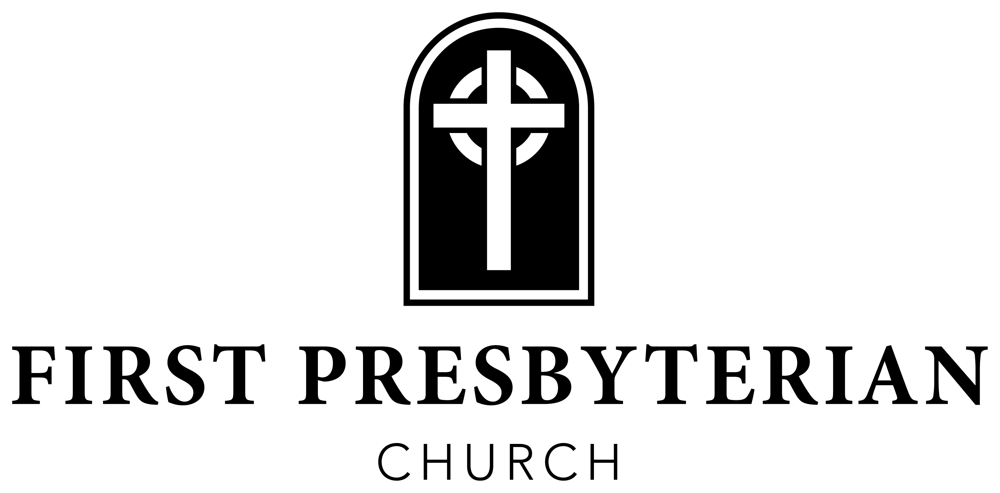

Flower Dedication
The beautiful flowers adorning the sanctuary this morning are given in honor of our children, grandchildren, and great-grandchildren. To God be the glory! — Mike and Shirley McClamroch
Announcements
Roca Blanca Project Fund. Our mission team needs help funding the work they will do while in Mexico. Giving to the RB Project Fund will go directly to purchasing food baskets for hungry people and buying supplies for all projects the team will complete while on the base. Envelopes are available at the Narthex and East Entrance. Thank you for participating in the work of the Lord at home and in other countries!
Samaritan’s Purse Shoeboxes. Collection boxes are available in the children’s wing and the side entrance by the church office. You can participate by shopping and collecting items, or by donating monetarily — each shoebox costs $10 to ship. Items needed: small composition notebooks, pencils, small cars/trucks, puzzles, jump ropes, hair bows/barrettes/brushes/combs, underwear in larger sizes, and small stuffed animals. No liquids, candy, or food!
Those Who Serve Today
Assisting Elder — GT McCullough
Greeters — Bob & Susan Joiner
Acolytes — John Butler & Betsy Butler
Circle of Prayer — Jenny Biggers & Jack Griffith
Ushers — Trey Tull, Don Williams, Brent Johnson, Hack Smith, & Hayden Worsham
Nursery — Deborah Kiddy, Katy Stanley, Penny Long, Suzanne Davis, Deb Parker, & Abbie Butler
AV Engineer — Russell Smith
Church Staff
Rev. Waring Porter - Pastor
Gregg Parker - Dir. of Discipleship
Bobby Capps - Dir. of Outreach & Care
Jennifer Shipp - Dir. of Student Ministries
Laura Kate Carmichiel - Dir. of Women’s Min. & Comm.
Phyllis Sellers - Day School Director
Jan Pike - Choir Director
Malechi Doren - Accompanist
Teresa Tsagarakis - Administrative Assistant
Sammy Allred - Bookkeeper
The Church Calendar
September 1 Women’s Bible Study — Youth House, 8 a.m.
September 2 Youth · Women’s Bible Study, 6 p.m. — No KidsQuest
September 3 MI3 Week 4
September 7 Labor Day — Church Office Closed
September 13 Session Meeting · Deacons’ Meeting
Online Giving

Scan to give online
919 East Shiloh Rd · Corinth, MS 38834 · fpccorinth.org · 662-286-6638

August 30, 2026
Fourteenth Sunday after Pentecost
“To be disciples, to make disciples”